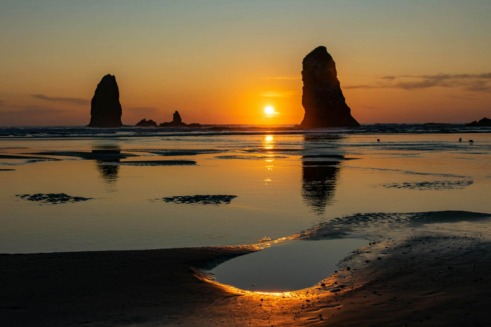

Oregon · Cannon Beach
Best things to do in Cannon Beach
The rock at low tide, then leave. The town is not a food city.

Cannon Beach is worth the trip for the rock and the bluff, and it is a bad place to invent a food city. On r/OregonCoast, people who live with the summer crowds say the town is busy because it is the easy drive from Portland, and that the fix is timing, not a different ocean. A July 2025 thread prefers Cannon Beach to Seaside for a smaller shopping street, and points anyone who wants fewer people toward Manzanita. Another comment in a November 2025 thread calls the town expensive and overrated as a meal stop and tells you to eat in Portland. Use the town for the beach. Eat one good dinner. Do not expect a restaurant scene.
If you only have one day
Low tide at Haystack, then leave. The visitor bureau says the rock is 235 feet, a national wildlife refuge above the high-tide line, and a marine garden in the pools. Nothing comes off the rocks within 300 yards. Do not climb above the barnacle line. Be there an hour or more before low tide, and do not turn your back on the water. Midday high tide is a photo of the rock, not the pools. Puffins are an early-spring through mid-summer reason to bring binoculars.
If the tide is wrong, drive to Ecola first and come back for the rock. Do not do both at noon in July. The bureau says park lots line up from June through September.
Do this instead of another lap of the same sand
Ecola, in the morning
From 5th Street it is 1.5 miles up Ecola Park Road to the fee station. Day-use permit required; the state says to call for the fee. No RVs or trailers. No overnight parking. The west section of the Clatsop Loop has been closed since a landslide notice dated April 17, 2026. Pets in the park need a leash of six feet or less.
Arcadia Beach, one mile south
Oregon State Parks describes a shady pull-off and a beach that runs more than a mile between headlands. Hug Point is the headland to the south. You can only walk around either headland at low tide. This is the quieter beach stop when Haystack’s sand is a crowd. It is not a town.
Hug Point, five miles south
The state parks page calls it an easy walk to a cove, with a seasonal waterfall, sandstone caves, and pools at low tide, and it warns that you can get stranded on the point when the tide comes in. An August 2025 thread on r/OregonCoast says the lot is a mess at midday, with cars waiting on the highway, and that before about 10 a.m. or on a weekday is the workable window. A November 2025 post said storms had closed the stairway indefinitely. The parks page checked for this guide describes the site as open and does not repeat that closure. Read the page the week you go. If the stairs are closed, Arcadia is the nearby beach that does not depend on them.
Eat in town, without a crawl
Do not plan the morning around Sleepy Monk. The roastery’s own page says the Cannon Beach storefront closed for good, and the Tripadvisor listing for 1235 S Hemlock marks the coffee shop closed. The scores below are for that closed shop, so you can see why people still name it. The beans are still roasted. They are not a cup you can walk in and buy.
Public Coast Brewing, 264 3rd Street on its Yelp listing, is the casual beer-and-food room. Yelp sits under Google. A June 2026 Tripadvisor review says the fish sandwich was mostly lettuce. The Wayfarer is the oceanfront dining room, 1190 Pacific Drive on Yelp. The scores sit lower than the inns, on a much larger count. A September 2026 Tripadvisor review describes a party of nine that walked out after a seating and check argument. Have one dinner. Spend the rest of the time outside.
Getting there
The visitor bureau’s getting-here page: Highway 26 west to US 101, then four miles south, less than two hours and about 80 miles from Portland. Northwest POINT is listed twice a day if you are not driving. A car is what gets you to Ecola and to Hug Point.
Sources
Hours, fares, and closures change. Ratings are the scores and review counts read in October 2026. Community notes are paraphrased from threads linked below.
- Oregon State Parks, Hug Point
- Oregon State Parks, Arcadia Beach
- Oregon State Parks, Ecola
- Cannon Beach, Haystack Rock
- Cannon Beach, Ecola directions
- Cannon Beach, getting here
- Cannon Beach, places to stay
- r/OregonCoast, Hug Point crowds, Aug 2025
- r/OregonCoast, Cannon Beach vs Seaside, July 2025
- r/OregonCoast, Hug Point closure report, Nov 2025
- Sleepy Monk, the shop closed
Last checked: October 2026.